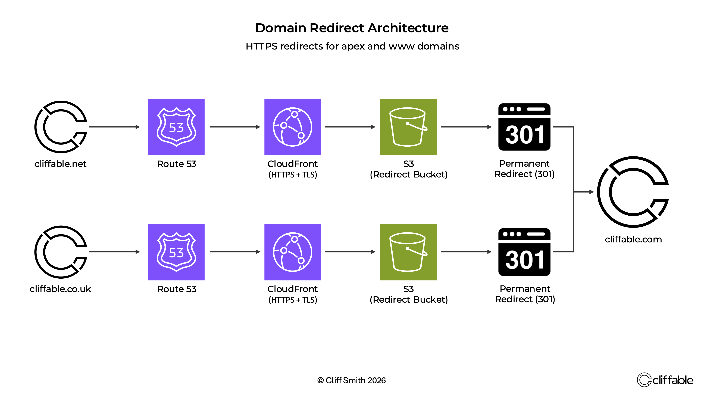
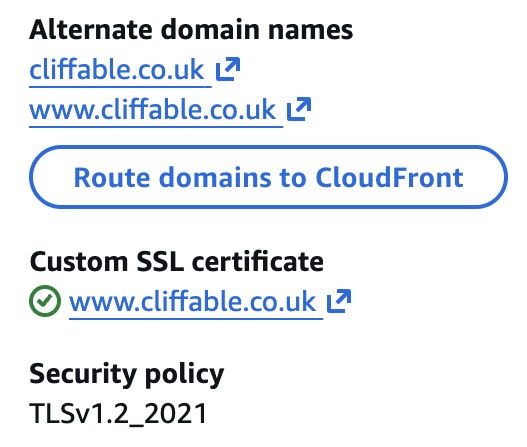

Published 5 June 2026
Organising Domains, DNS and SSL in AWS
As Cliffable moved from a training project into a live portfolio site, I consolidated the domains into a dedicated AWS account and built HTTPS redirects for secondary domains using Route 53, CloudFront, ACM and S3.
{kind=link}

HTTPS redirect architecture for apex and www domains, using Route 53, CloudFront, ACM and S3 redirect buckets.
Separating training from production
The Cliffable domains were originally purchased in another AWS account, which had become my general training account while studying and building AWS labs.
As Cliffable developed into a live portfolio site, I wanted a cleaner separation between temporary training resources and production infrastructure.
The goal was to manage the main website, domains, DNS records, SSL certificates and redirect infrastructure from one AWS account.
Transferring the domains
The next step was moving the domains into the Cliffable account. This was fairly straightforward as the migration was entirely within AWS.
After the transfer completed, I recreated the Route 53 hosted zones and updated the registrar name servers to point to them.
With the domains, DNS records and SSL certificates now managed alongside the website, future administration became much simpler.
The redirect requirement
Cliffable uses cliffable.com as the primary domain.
The secondary domains needed to redirect permanently to the main site:
- cliffable.net → cliffable.com
- www.cliffable.net → cliffable.com
- cliffable.co.uk → cliffable.com
- www.cliffable.co.uk → cliffable.com
The redirects also needed to work over HTTPS for both apex and www versions of each domain.
Why S3 alone was not enough
My initial solution used dedicated S3 website redirect buckets for the secondary domains.
S3 static website hosting can generate redirect responses, but S3 website endpoints only support HTTP. That meant S3 alone could not provide HTTPS redirects for custom domains.
To make the redirects work securely over HTTPS, I needed CloudFront in front of the S3 redirect buckets, with ACM certificates attached to the CloudFront distributions.
The final architecture
The final redirect path became:
- Route 53 receives the request for the secondary domain
- Route 53 alias records point the domain to CloudFront
- CloudFront provides HTTPS support using an ACM certificate
- CloudFront forwards the request to the S3 website redirect bucket
- S3 returns a 301 permanent redirect to https://cliffable.com
To support this design, I first created ACM certificates in us-east-1, because CloudFront requires certificates to be issued in that region.
Each certificate covered both the apex and www versions of the redirect domain. DNS validation was completed through Route 53 and the certificates were issued automatically once the validation records propagated.
I then created separate CloudFront distributions for cliffable.net and cliffable.co.uk, using dedicated S3 website redirect buckets as origins.
Each distribution was configured with:
- A custom ACM certificate
- Alternate domain names for both the apex and www versions of the domain
- An S3 website redirect bucket as the origin
Finally, I created Route 53 alias records for both A and AAAA responses, pointing the apex and www domains to the appropriate CloudFront distribution.
This completed the HTTPS redirect path from the domain, through CloudFront, to the S3 redirect bucket and ultimately to https://cliffable.com.
{kind=link}

CloudFront and ACM provided HTTPS support for both apex and www domains, enabling secure redirects that would not have been possible using an S3 website redirect alone.
Troubleshooting the redirects
A few issues appeared during implementation.
The first was a temporary 504 Gateway Timeout from CloudFront while the distributions were still deploying. This resolved once deployment completed.
The second issue was that the www versions of the domains initially returned NXDOMAIN. The cause was that the CloudFront distributions had originally been configured only for the apex domains.
Adding the www names as alternate domain names in CloudFront, then creating the matching Route 53 alias records, resolved the issue.
There was also a short period of confusion caused by local DNS caching. Public resolvers were already returning valid CloudFront addresses, while the local resolver still returned NXDOMAIN. Testing with external resolvers confirmed that the AWS configuration was correct.
Validation
Once the distributions deployed and DNS propagated, I verified that all secondary domains redirected correctly to the primary site.
- cliffable.net
- www.cliffable.net
- cliffable.co.uk
- www.cliffable.co.uk
Each domain redirected to https://cliffable.com using HTTPS and a permanent 301 redirect.
The benefit of keeping everything together
Having worked with domains registered both inside and outside AWS, I came away with a much stronger appreciation for managing domains within the same AWS account as the infrastructure.
Route 53, ACM and CloudFront integrate closely with one another. DNS validation records can be created automatically, hosted zones are immediately available during certificate creation, and there is far less context switching between providers and management consoles.
While there may be valid business reasons to keep domain registration elsewhere, managing the domains within the same AWS account significantly reduced complexity and made the overall workflow easier to understand and maintain.
Conclusion
What looked like a simple redirect task became a useful lesson in how DNS, SSL certificates, CloudFront and S3 fit together on AWS.
S3 redirect buckets handled the redirect response, but CloudFront and ACM were required to make the redirects work properly over HTTPS for custom domains.
Consolidating the domains into the Cliffable AWS account also made the platform cleaner. Training resources now live separately from production infrastructure, while the close integration between Route 53, ACM and CloudFront simplified ongoing management.
Related project
This work was implemented as part of the Static Website on AWS project.